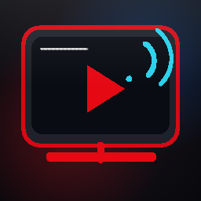

Windows IPTV Player
Tvip Flix Pro
Player para listas M3U/M3U8 fornecidas pelo usuário, com categorias, busca, reprodução HLS e espelhamento para TV usando recursos nativos do Windows.
Organização
Separa canais ao vivo, filmes e séries quando a playlist possui metadados compatíveis.
Suporte HLS
Reproduz streams M3U8/HLS e links de vídeo suportados pelo ambiente Windows.
Sem conteúdo incluso
O app não fornece canais, playlists, filmes, séries ou assinaturas IPTV.
Aviso importante
Tvip Flix Pro é uma ferramenta de reprodução. Use apenas listas e conteúdos que você tem direito de acessar.